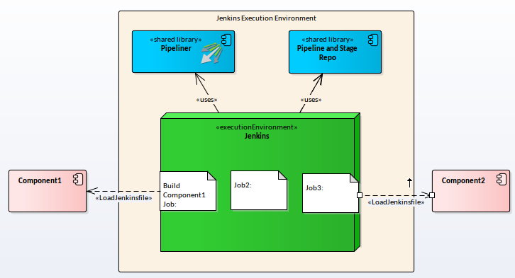
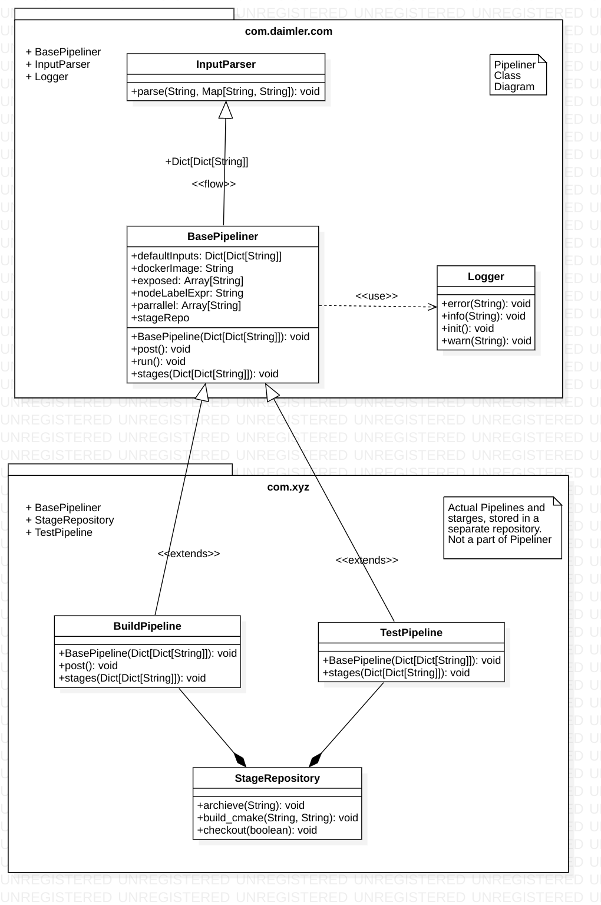
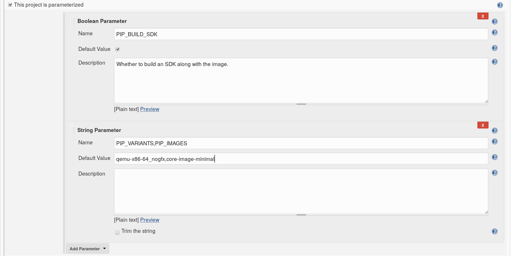
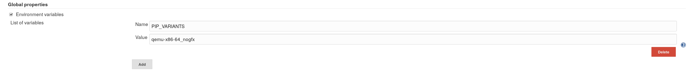

Pipeliner provides a template to define complex pipelines and run them in Jenkins.
A Pipeline provides a structured way to define the functionality of a job, associate inputs and default values among many other things. Pipelines are defined as Groovy classes.
Pipeliner is the component that defines the template for these pipelines and evenutally processes these pipelines. It also parses user inputs to pipelines, configures pipelines and provides utility functions.
Pipeliner in itself is only a runner for the pipelines a project sets up and maintains. It does not contain any runnable pipelines except some example pipelines for reference.
To set it up one needs to use Jenkins' Shared Libraries functionality to load Pipeliner and the project specific library where all the pipelines and stages are specified.

Every project which uses Pipeliner will have their project specific pipelines. Those should be provided in a seperate git repository as another shared library. Every pipeline needs to be a class which extends the BasePipeline class and defines it's specific input parameters and stages. Stages should be reusable functions stored in a seperate directory.

The InputParser expects a message which can for example be provided from a pull request or merge request description from web UI. The message needs to adhere to a specific syntax so it can be parsed and understood by the parser. Here is an example:
This is a merge request description it can span over several lines Like this for example, but there needs to be a delimiter at the end which seperates the normal message from the data which is supposed to be parsed by the parser. -- key = value listKeys = five six
The message delimiter is two or more dashes on a new line without any other characters.
The syntax for the rest of the data is key-value pairs with a equals sign between them. Keys are case insensetive and should only contain ASCII characters. Values can be either a string or a list of strings seperated by the pipe character.
Everything will be trimmed of whitespaces to the left and right before it goes in as machine readable data into Pipeliner.
Be aware that the parser only supports string and list of string types, no bolean or other types.
Note: Gitlab project jobs cannot be parameterized by this method.
Go to the Configue of the Jenkins job, and follow the setup of the
screenshort below, be aware of that, the name of the variables need to be prefix
with "PIP_" case-insensitive, to be able to separate with other normal
Jenkins parameters, so that the pipeliner InputParser will understand they
are for the pipeliner specifically.

Setting up global environment variables is quite similar with the parameters in Jenkins job. Go to Manage Jenkins -> Configue System -> Global properties, then check the Environment variables, and add environment variables as shown below. Also remember the PIP_ prefix.

As we are using pipeliner, the heavy part of the logic are in pipeliner-depot now, the current Jenkinsfile will end up with only oneline like:
execYoctoPipeline()
And the environment variables need be configued above this line, e.g.
env.PIP_TARGETS="rpi3_nogfx:core-image-base qemu-x86-64_nogfx:core-image-minimal"
Note: The priorities of the four methods are Merge Request Message >
Jenkinsfile > Jenkins Job Configure > Global Environment